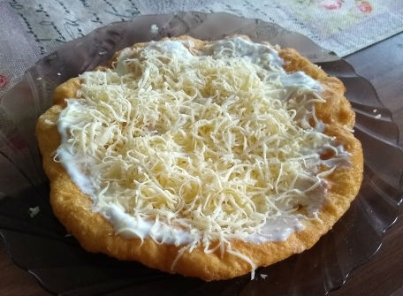

Palove langoše

Ingrediencie
- 500 g hladkej múky
-
- 3x varené zemiaky
- v šupke
- 1x vajce
- 30 g droždia
- 1,5 dcl mlieka
- 1,5 dcl vody
- 1/2 lyžičky kryštáľového cukru
Postup
- Do misky nasypeme múku a urobíme v nej jamku.
Do jamky vložíme dorždie a kryštáľový cukor, zalejem trochou vlažného mlieka.
Nehcáme kvások vykysnúť.
Návod ako si správne pripraviť kvások nájdeme na stránke:
príprava kvásku
- Po vykysnutí kvásku pridáme do misky na jemno postrúhané zemiaky a vajce.
- zemiaky strúhame vychladené
-
Vlažným mliekom a vodou vypracujeme hustejšie cesto,
ktoré necháme vykysnúť.
- Cesto vyklopíme na dosku, príborovým nožom krájame, rukami zľahka naťahujeme
a formujeme langoše.
-
Vysmážame na oleji z oboch strán.
- Môžeme ochutiť cesnakom, prípadne kečupom a struhaným syrom,
alebo pochúťkovou smotanou.
Na recepty odporúčam nasledujúcu stránku :)
späť na začiatok